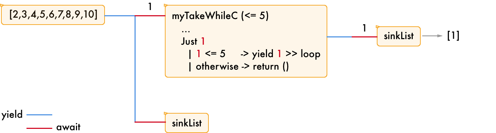
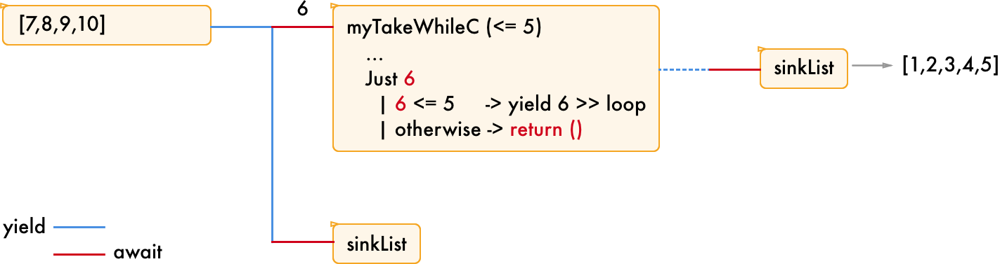
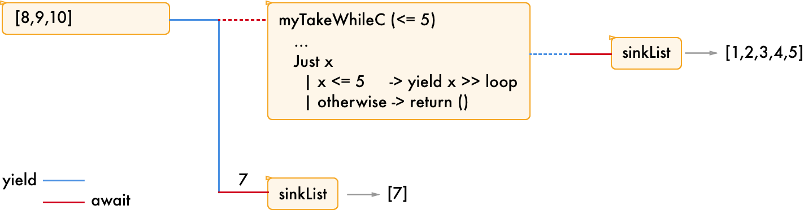

Haskell Quiz No.8
難易度: λλλ
以下の Conduit を使ったコードの実行結果を予想してみてください！
#!/usr/bin/env stack
-- stack script --resolver lts-11.3
import Conduit
main :: IO ()
main = print $ runConduitPure $ return () .| do
mapM_ leftover [1..10]
sinkList答えは次回。
はじめに
前回の問題と答えは以下の通りです。
問題
難易度: λλ
#!/usr/bin/env stack
-- stack script --resolver lts-11.3
import Conduit
myTakeWhileC :: Monad m => (i -> Bool) -> ConduitM i i m ()
myTakeWhileC f = loop
where
loop = do
mx <- await
case mx of
Nothing -> return ()
Just x
| f x -> yield x >> loop
| otherwise -> return ()
main :: IO ()
main = print $ runConduitPure $ yieldMany [1..10] .| do
x <- myTakeWhileC (<= 5) .| sinkList
y <- sinkList
return (x, y)こたえ
実際に実行してみましょう！
$ ./Quiz7.hs
([1,2,3,4,5],[7,8,9,10])6 が抜けていることに注意してくださいね！
解説の補足
面白いシリーズありがとうございます(いまさらながら読んでます)。ところで細かい点なんですが、conduitは内部ではチャンクサイズ自体は管理していません。sourceFile等でByteStringが32KBになるのはそのソースがByteStringのdefaultChunkSizeで分割して流してるだけですね
— 水無麻那 (@Mizunashi_Mana) 2018年5月15日
なので、型毎に決まるというよりはソース毎に決まるが正しい気がします(例えば、yieldMany [“aa”, “bb” :: ByteString]をawaitすると、そのまま“aa”、“bb”が流れてきます)
— 水無麻那 (@Mizunashi_Mana) 2018年5月15日
確かに指摘通りで、型によってチャンクサイズが決まるのではなく、利用する Source によって決まるの方が正確ですね！ご指摘ありがとうございます。
ソースコードを読むとすぐにわかるのですが、せっかくなので少し解説します。
まず sourceFile 関数の内部で readChunk 関数の呼び出しがあります。
sourceFile :: MonadResource m
=> FilePath
-> ConduitT i S.ByteString m ()
sourceFile fp =
bracketP
(FR.openFile fp)
FR.closeFile
loop
where
loop h = do
bs <- liftIO $ FR.readChunk h
unless (S.null bs) $ do
yield bs
loop hこの readChunk 関数の defaultChunkSize が実際のチャンクサイズです。
defaultChunkSize の定義は以下のとおりです。
-- | The chunk size used for I\/O. Currently set to 32k, less the memory management overhead
defaultChunkSize :: Int
defaultChunkSize = 32 * k - chunkOverhead
where k = 1024このため、sourceFile を利用した場合は 32kbyte のチャンクサイズでデータが流れるということになります。
解説
今回の問題は [1,2,3,4,5],[7,8,9,10] ではなく [1,2,3,4,5],[6,7,8,9,10] と思った人もいるのではないでしょうか？
では何故このような動作になってしまうのか、それは myTakeWhileC 関数に秘密があります。
myTakeWhileC :: Monad m => (i -> Bool) -> ConduitM i i m ()
myTakeWhileC f = loop
where
loop = do
mx <- await
case mx of
Nothing -> return ()
Just x
| f x -> yield x >> loop
| otherwise -> return ()この関数を理解するためには、以下の2点を抑えておけば十分です。
awaitは上流のパイプに対して、値をチャンクサイズで1つ要求する関数です。(チャンクサイズは型 (より正確に言えば Source) によって違います。リストであれば要素1つですが、ByteString(sourceFile を利用した場合) であれば 1byte や 1文字 ではなく！ 32kbyteになります。)yieldは下流のパイプに値を流す関数です
つまり、この関数は上流からデータを取得し、f x が True であれば下流にデータを流す準備を行い、同じ処理を繰り返します。(また、上流のデータが無くなれば await の結果は Nothing となるため、そこで処理が止まります)
今回の f は (<= 5) なので流れてくる値が 5 以下の間は、上流から流れてきた値をそのまま下流に流す準備をします。
図で書くとこんな感じでしょうか。yield の準備完了と await の要求を青と赤の実線で表現しています。(破線はそうでない場合)
下記の図は一番最初の await です。sinkList も await していますが、先に myTakeWhileC 関数によって消費されてしまうため、データは届きません。
myTakeWhileC に適用した 1 は条件を満たすため、さらに下流の sinkList にデータを流す準備を行い、sinkList が await したタイミングでデータが流れます。

2 〜 5 の場合も同様に処理されます。そのため、main 関数の x <- myTakeWhileC (<= 5) .| sinkList の x は [1,2,3,5,] という値になります。
次に条件を満たさない 6 の場合を考えましょう。
この場合は myTakeWhileC 関数は return () を返します。そのため下流の sinkList にはデータを流しません。

ここで 6 のデータが消え去ります。通常、一度消費してしまった値については再利用できません。(ここでは解説しませんが、Conduit では leftover という関数を使って一度消費してしまった値を上流に返すための関数が定義されています)

そのため、次は 7 が2つ目の sinkList に流れます。
8 〜 10 についても同様に処理されるため、結果として y <- sinkList の y は [7,8,9,10] となります。
まとめ
- パイプを流れるデータはチャンクサイズということを意識する。
- 消費してしまったデータは
leftoverを使わない限り取り戻せない
以上です。